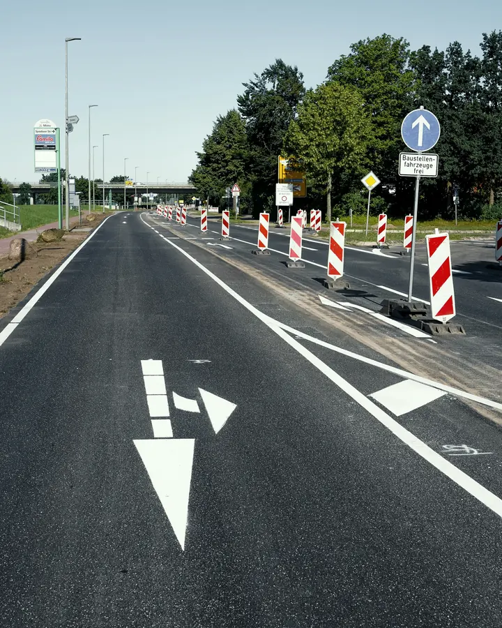
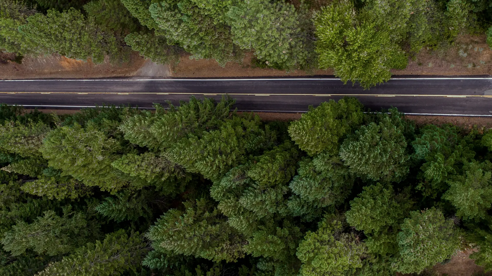
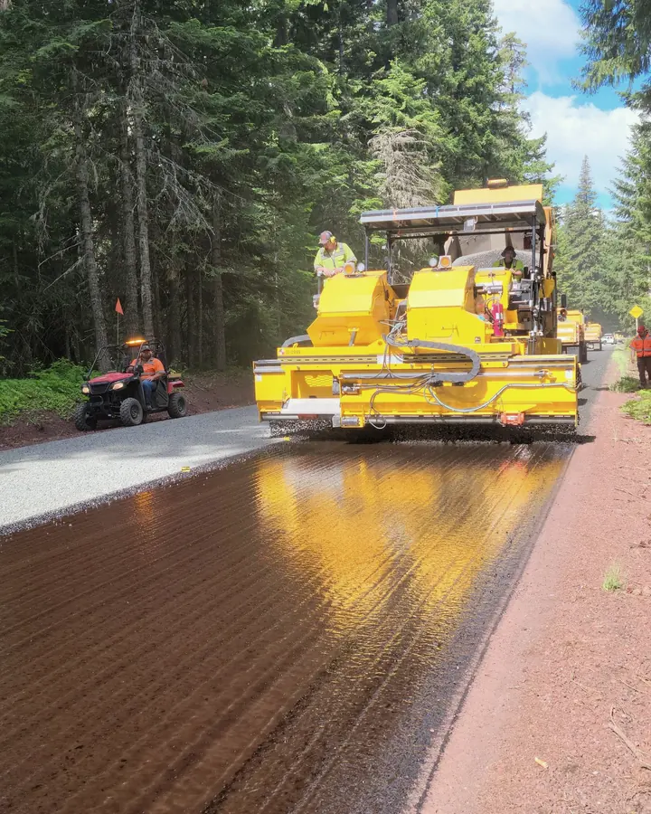
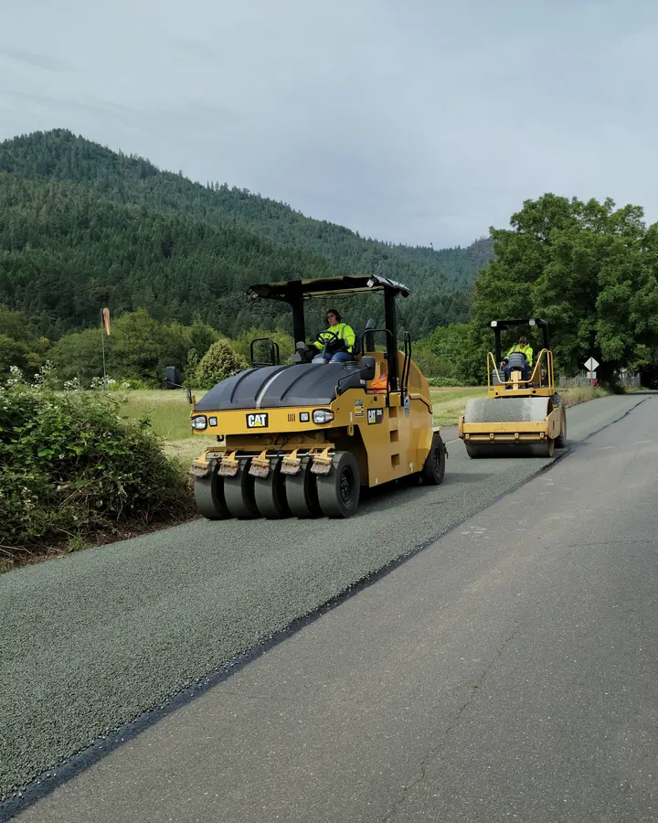
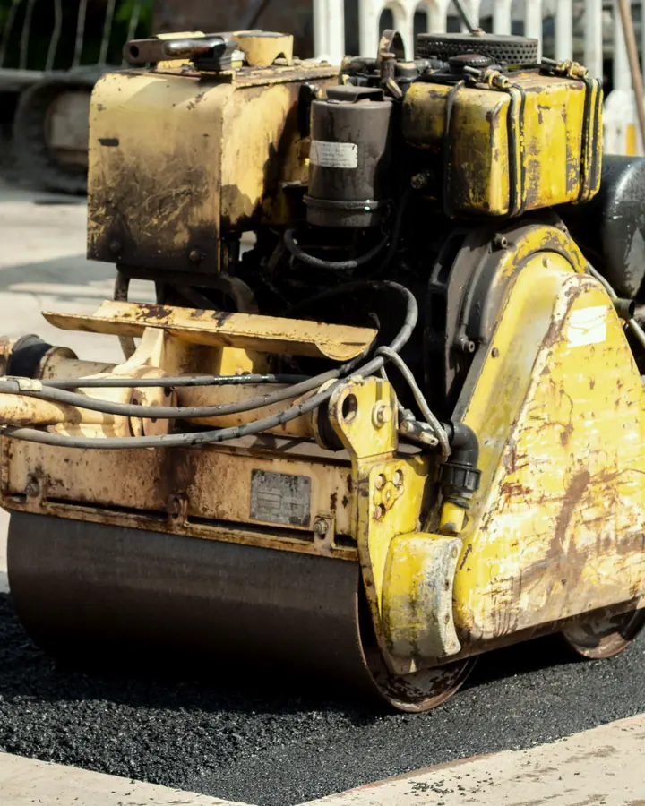
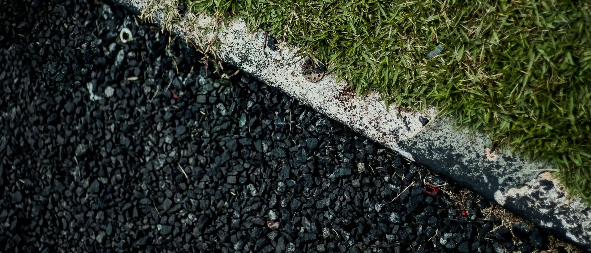
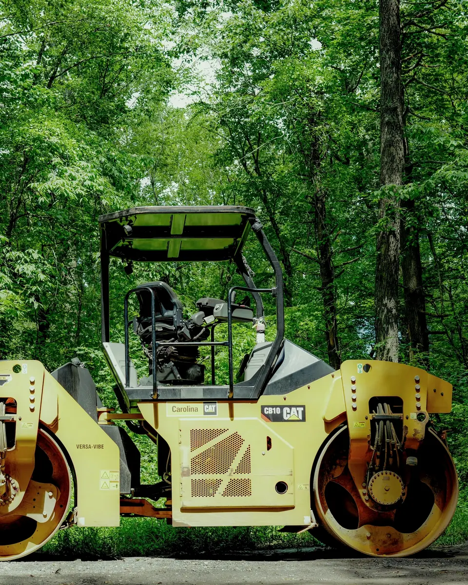
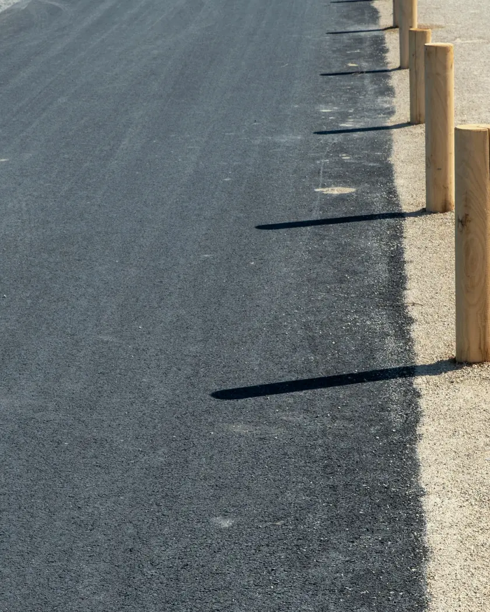
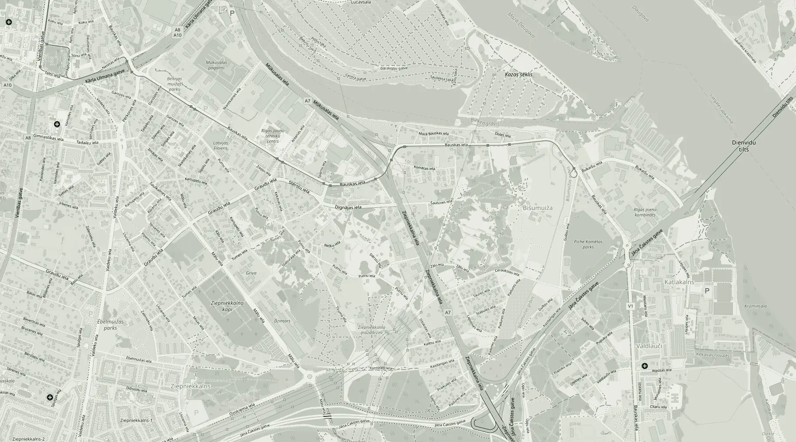

01Ceļi un ielasДороги и улицы
Ceļu, ielu un piebraucamo ceļu būvniecība pēc projekta.Строительство дорог, улиц и подъездных путей по проекту.

Ceļu būvniecība · RīgaДорожное строительство · Рига
Ceļu, ielu un laukumu būvniecība: pamatne, segums, remonts. Uzrakstiet par savu objektu, un atbildēsim ar priekšlikumu.Дороги, улицы и площадки: основание, асфальт, ремонт. Напишите о своём объекте, и мы ответим с предложением.
Ceļu darbiДорожные работы
Būvējam ceļus, ielas un piebraucamos ceļus: no pamatnes līdz asfalta segumam. Uzrakstiet, kas jādara jūsu objektā.Строим дороги, улицы и подъездные пути: от основания до асфальтового покрытия. Напишите, что нужно сделать на вашем объекте.

01Ceļu, ielu un piebraucamo ceļu būvniecība pēc projekta.Строительство дорог, улиц и подъездных путей по проекту.

02Asfalta seguma ieklāšana un blietēšana ceļiem, ielām un laukumiem.Укладка и уплотнение асфальта на дорогах, улицах и площадках.

03Grunts un šķembu pamatnes sagatavošana, lai segums kalpotu ilgi.Подготовка основания из грунта и щебня, чтобы покрытие служило долго.

04Bojātu posmu remonts, bedru labošana un seguma atjaunošana.Ремонт повреждённых участков, ям и восстановление покрытия.

Labs ceļš sākas zem seguma.Хорошая дорога начинается под покрытием.
Pamatne, slāņi, blietēšana un tikai tad asfalts.Основание, слои, уплотнение и только потом асфальт.

Kā strādājamКак работаем
Uzrakstiet vai piezvaniet: kur atrodas objekts, kāds ir darbu apjoms un vai ir projekts.Напишите или позвоните: где объект, какой объём работ и есть ли проект.
Apskatām objektu vai projektu un vienojamies par apjomu, termiņiem un cenu.Смотрим объект или проект и согласуем объём, сроки и цену.
Sagatavojam pamatni, ieklājam segumu un blietējam to pēc projekta.Готовим основание, укладываем и уплотняем покрытие по проекту.
Pārbaudām rezultātu kopā ar jums un nododam darbus ar dokumentiem.Проверяем результат вместе с вами и сдаём работы с документами.
UzņēmumsКомпания
Mūsu rekvizīti un reģistru dati ir publiski: tos var pārbaudīt Uzņēmumu reģistrā un bis.gov.lv.Наши реквизиты и данные реестров открыты: их можно проверить в Регистре предприятий и на bis.gov.lv.

Būvkomersantu reģistrsРегистр строителей
Nr.№18967

BirojsОфис
AdreseАдресZiepniekkalna iela 13, Rīga, LV-1004Ziepniekkalna iela 13, Rīga, LV-1004
Atvērt kartēОткрыть на картеKontaktiКонтакты
Uzrakstiet, kur atrodas objekts, kas jādara un vai ir projekts. Atbildēsim ar priekšlikumu.Напишите, где находится объект, что нужно сделать и есть ли проект. Ответим с предложением.